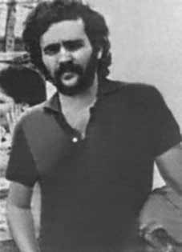

Fernando
Augusto
de Santa
Cruz
Oliveira
CIRCUNSTÂNCIAS DA MORTE
Fernando Augusto Santa Cruz Oliveira foi visto pela última vez por sua família quando deixou a casa do irmão, o advogado Marcelo de Santa Cruz Oliveira, no Rio de Janeiro, em uma tarde de sábado, durante o carnaval de 1974.
Era dia 23 de fevereiro, e Fernando tinha saído para um encontro com o amigo de infância, Eduardo Collier Filho. Ciente da situação política do companheiro, que estava sofrendo um processo na Justiça Militar, Fernando tinha avisado seus familiares que, caso não voltasse até às 18h do mesmo dia, provavelmente teria sido preso. Como Fernando não retornou, após verificarem se ele havia sido detido, seus familiares foram até a residência de Eduardo a fim de obter notícias. Souberam, então, que elementos das forças de segurança haviam estado no apartamento e levado alguns livros, o que indicava que os dois militantes tinham sido capturados.
Eduardo e Fernando foram presos nessa data de 23 de fevereiro de 1974, possivelmente por agentes do DOI-CODI do I Exército, Rio de Janeiro, e nunca mais foram vistos. As famílias de Fernando e Eduardo apressaram-se em contatar diferentes organismos, nacionais e internacionais, e pessoas públicas que poderiam fornecer ou obter notícias sobre os dois. Informalmente, receberam uma informação da Cruz Vermelha Brasileira, que afirmava que os dois estariam do DOI-CODI/II Exército, em São Paulo. A irmã de Fernando, Márcia Santa Cruz Freitas, a mãe e a irmã de Eduardo compareceram prontamente ao quartel-general do II Exército.
Na sede o II Exército, receberam de um funcionário identificado como Marechal a informação de que os dois militantes encontravam-se nas dependências daquele órgão. As famílias deixaram, então, alguns pertences dos rapazes e foram instruídas a retornar no domingo, dia oficial de visita. Ao voltarem no domingo, novamente não puderam vê-los, sob a justificativa, dada pelo funcionário chamado Doutor Homero, de que tinha havido um equívoco e que os dois não estavam presos no DOI-CODI/SP. A mãe de Fernando, Elzita, redigiu uma carta relatando as informações obtidas pela família, que foi remetida ao General Ednardo D‟Avila, comandante do II Exército, e ao general Golbery do Couto e Silva.
Em resposta a essa correspondência enviada ao II Exército, o Tenente Coronel Horus Azambuja negou que Fernando estivesse preso, desde 23 de fevereiro de 1974, em qualquer dependência do II Exército e afirmou, ainda, que a carta da família Santa Cruz continha calúnias contra a instituição: “Seria desonrar todo nosso passado de tradições, se nos mantivéssemos calados diante de injúrias ora assacadas contra nossa conduta de soldados da Lei e da Ordem que abominam o arbítrio, a violência e a prepotência”. As famílias continuaram o longo processo de busca, primeiramente do paradeiro das vítimas e, em seguida, das circunstâncias de morte e do destino de seus corpos.
Cartas foram enviadas à primeira dama dos Estados Unidos, à Comissão Interamericana de Direitos Humanos (CIDH), a Dom Helder Câmara e a outras pessoas influentes, como políticos e outras lideranças, bem como a instituições de projeção internacional. Entre as trocas de comunicação, destacam-se duas. O senador Franco Montoro do MDB-SP respondeu publicamente à carta da família de Fernando em discurso feito no Senado Federal, no qual questionou a legitimidade da prisão do militante pelo Estado e pediu esclarecimentos sobre o caso ao Ministro da Justiça. Seu discurso foi publicado no Diário do Congresso Nacional de 11 de abril de 1974, acompanhado da carta da família.
A CIDH também interpelou o Estado brasileiro na tentativa de obter informações e, no dia 9 de dezembro de 1975, enviou às famílias a resposta fornecida pelo Estado: segundo a nota oficial, Fernando estaria vivendo na clandestinidade, enquanto Eduardo – contra quem havia sido expedido um mandado de prisão – estaria foragido, sem que o Estado tivesse qualquer informação sobre seu paradeiro. Em meio a informações desencontradas e a dificuldades, as famílias dos dois militantes permaneceram em busca de pistas sobre os desaparecimentos. Entre as iniciativas, os familiares de Fernando enviaram uma carta à Anistia Internacional, ainda no período de forte repressão, e levaram o caso ao Tribunal Bertrand Russel.
As denúncias pressionaram o então Ministro da Justiça, Armando Falcão, a dar uma resposta sobre a situação dos desaparecidos. Em pronunciamento oficial divulgado no dia 6 de fevereiro de 1975, o Ministro informou sobre Fernando: “procurado pelos órgãos de segurança e encontra-se na clandestinidade”. Entretanto, um documento de 1978, originário do Ministério da Aeronáutica, reconhece que Fernando foi preso no dia 22 de fevereiro de 1974, no Rio de Janeiro, o que contradiz as informações transmitidas oficialmente pelo Estado brasileiro. Além disso, sabe-se que Fernando era funcionário público e mantinha uma vida legal. Já na década de 1990, o Relatório da Marinha enviado ao então Ministro da Justiça, Maurício Corrêa, em dezembro de 1993, informava que Fernando teria sido preso no dia 23 de fevereiro de 1974, sendo considerado desaparecido desde então.
Há pelo menos duas hipóteses para explicar as circunstâncias de desaparecimento de Fernando e Eduardo. A primeira diz respeito à possibilidade de terem sido levados do Rio de Janeiro, onde foram capturados, para o DOI-CODI do II Exército, em São Paulo. Como relatado, os familiares chegaram a receber de um funcionário chamado Marechal a informação de que os militantes estavam presos naquele órgão. A suspeita é reforçada pela reação do mesmo funcionário que, ao tomar conhecimento dos nomes dos dois militantes procurados, acrescentou o sobrenome “Oliveira” ao nome de Fernando, sem que a família o tivesse mencionado.
Essa indicação do DOI-CODI/SP como possível órgão responsável pelo desaparecimento de Fernando e Eduardo aponta para a possibilidade de os corpos dos dois militantes terem sido encaminhados para sepultamento como indigentes no Cemitério Dom Bosco, em Perus. A segunda hipótese é a de Fernando e Eduardo terem sido encaminhados para a Casa da Morte, em Petrópolis, e seus corpos levados posteriormente para incineração em uma usina de açúcar. Esta hipótese é embasada, sobretudo, no depoimento prestado pelo exdelegado do DOPS/ES, Claudio Guerra, que afirmou que os corpos dos dois militantes teriam sido incinerados na Usina Cambahyba, em Campos dos Goytacazes (RJ).
Em depoimento prestado à CNV, o agente chegou a reconhecer formalmente uma foto de Fernando de Santa Cruz e apontá-lo como uma das vítimas que teria recolhido na Casa da Morte para transportar para a usina. O ex-sargento do Exército Marival Chaves também prestou depoimento à CNV e relatou que, no âmbito de uma operação comandada pelo CIE no Nordeste, alguns prisioneiros eram recolhidos na região nordestina e enviados para a Casa da Morte, em Petrópolis, com o intuito premeditado de se desaparecer com os corpos. Segundo Marival, Fernando e Eduardo teriam sido vítimas desta operação, o que indica que eles podem ter sido levados ao DOI-CODI/RJ e, de lá, conduzidos para a Casa da Morte, em Petrópolis.
Fernando de Santa Cruz Oliveira e Eduardo Collier Filho permanecem desaparecidos até hoje.
Fernando Augusto Santa Cruz Oliveira was last seen by his family when he left the house of his brother, lawyer Marcelo de Santa Cruz Oliveira, in Rio de Janeiro, on a Saturday afternoon, during the 1974 carnival.
It was February 23rd, and Fernando had gone out on a date with his childhood friend, Eduardo Collier Filho. Aware of the political situation of his companion, who was being prosecuted in the Military Court, Fernando had warned his family that, if he did not return by 6pm on the same day, he would probably have been arrested. As Fernando did not return, after checking whether he had been detained, his family went to Eduardo's residence in order to obtain news. They then learned that members of the security forces had been to the apartment and taken some books, which indicated that the two militants had been captured.
Eduardo and Fernando were arrested on February 23, 1974, possibly by DOI-CODI agents from the 1st Army, Rio de Janeiro, and were never seen again. Fernando and Eduardo's families hurried to contact different national and international organizations and public figures who could provide or obtain news about the two. Informally, they received information from the Brazilian Red Cross, which stated that the two were from DOI-CODI/II Army, in São Paulo. Fernando's sister, Márcia Santa Cruz Freitas, Eduardo's mother and sister promptly attended the II Army headquarters.
At the headquarters of the Second Army, they received information from an employee identified as Marshal that the two militants were on that body's premises. The families then left some of the boys' belongings and were instructed to return on Sunday, the official visiting day. When they returned on Sunday, they were again unable to see them, under the justification, given by the employee called Doctor Homero, that there had been a mistake and that the two were not imprisoned at DOI-CODI/SP. Fernando's mother, Elzita, wrote a letter reporting the information obtained by the family, which was sent to General Ednardo D'Avila, commander of the II Army, and General Golbery do Couto e Silva.
In response to this correspondence sent to the II Army, Lieutenant Colonel Horus Azambuja denied that Fernando had been imprisoned, since February 23, 1974, in any dependency of the II Army and further stated that the letter from the Santa Cruz family contained slander against the institution: “It would dishonor our entire past of traditions, if we remained silent in the face of insults sometimes leveled against our conduct as soldiers of Law and Order who abhor the arbitrariness, violence and arrogance”. The families continued the long process of searching, firstly for the whereabouts of the victims and then for the circumstances of death and the fate of their bodies.
Letters were sent to the first lady of the United States, the Inter-American Commission on Human Rights (IACHR), Dom Helder Câmara and other influential people, such as politicians and other leaders, as well as internationally renowned institutions. Among the communication exchanges, two stand out. Senator Franco Montoro from MDB-SP publicly responded to the letter from Fernando's family in a speech given in the Federal Senate, in which he questioned the legitimacy of the militant's arrest by the State and asked the Minister of Justice for clarification on the case. His speech was published in the Diary of the National Congress on April 11, 1974, accompanied by the family's letter.
The IACHR also questioned the Brazilian State in an attempt to obtain information and, on December 9, 1975, sent the response provided by the State to the families: according to the official note, Fernando was living in hiding, while Eduardo – against whom an arrest warrant had been issued – was on the run, without the State having any information about his whereabouts. Amid conflicting information and difficulties, the families of the two militants remained in search of clues about the disappearances. Among the initiatives, Fernando's family sent a letter to Amnesty International, still during the period of strong repression, and took the case to the Bertrand Russel Court.
The accusations pressured the then Minister of Justice, Armando Falcão, to respond to the situation of the disappeared. In an official statement released on February 6, 1975, the Minister informed about Fernando: “wanted by security agencies and is in hiding”. However, a 1978 document, originating from the Ministry of Aeronautics, recognizes that Fernando was arrested on February 22, 1974, in Rio de Janeiro, which contradicts the information officially transmitted by the Brazilian State. Furthermore, it is known that Fernando was a public servant and maintained a legal life. In the 1990s, the Navy Report sent to the then Minister of Justice, Maurício Corrêa, in December 1993, stated that Fernando had been arrested on February 23, 1974, and had been considered missing since then.
There are at least two hypotheses to explain the circumstances of Fernando and Eduardo's disappearance. The first concerns the possibility that they were taken from Rio de Janeiro, where they were captured, to the DOI-CODI of the II Army, in São Paulo. As reported, the family members received information from an employee called Marechal that the militants were being held in that institution. The suspicion is reinforced by the reaction of the same employee who, upon learning of the names of the two wanted militants, added the surname “Oliveira” to Fernando's name, without the family having mentioned it.
This indication by DOI-CODI/SP as a possible body responsible for the disappearance of Fernando and Eduardo points to the possibility that the bodies of the two militants were sent for burial as indigents in the Dom Bosco Cemetery, in Perus. The second hypothesis is that Fernando and Eduardo were sent to the Casa da Morte, in Petrópolis, and their bodies were later taken for incineration in a sugar factory. This hypothesis is based, above all, on the testimony given by the former DOPS/ES delegate, Claudio Guerra, who stated that the bodies of the two militants had been incinerated at the Cambahyba Plant, in Campos dos Goytacazes (RJ).
In a statement given to the CNV, the agent formally recognized a photo of Fernando de Santa Cruz and identified him as one of the victims he had collected at the Death House to transport to the plant. Former Army sergeant Marival Chaves also gave a statement to the CNV and reported that, as part of an operation led by the CIE in the Northeast, some prisoners were collected in the Northeast region and sent to the Casa da Morte, in Petrópolis, with the premeditated intention of disappearing with the bodies. According to Marival, Fernando and Eduardo were victims of this operation, which indicates that they may have been taken to DOI-CODI/RJ and, from there, taken to the Casa da Morte, in Petrópolis.
Fernando de Santa Cruz Oliveira and Eduardo Collier Filho remain missing to this day.
Fernando Augusto Santa Cruz Oliveira fue visto por última vez por su familia cuando salía de la casa de su hermano, el abogado Marcelo de Santa Cruz Oliveira, en Río de Janeiro, un sábado por la tarde, durante el carnaval de 1974.
Era 23 de febrero y Fernando había tenido una cita con su amigo de la infancia, Eduardo Collier Filho. Consciente de la situación política de su compañero, que estaba siendo procesado en el Tribunal Militar, Fernando había advertido a su familia que, si no regresaba antes de las seis de la tarde de ese mismo día, probablemente lo habrían detenido. Como Fernando no regresó, luego de comprobar si había sido detenido, su familia se dirigió a la residencia de Eduardo para obtener noticias. Luego supieron que miembros de las fuerzas de seguridad habían estado en el apartamento y se habían llevado algunos libros, lo que indicaba que los dos militantes habían sido capturados.
Eduardo y Fernando fueron detenidos el 23 de febrero de 1974, posiblemente por agentes del DOI-CODI del 1.er Ejército, Río de Janeiro, y nunca más fueron vistos. Las familias de Fernando y Eduardo se apresuraron a contactar con diferentes organismos y figuras públicas nacionales e internacionales que pudieran brindar u obtener noticias sobre los dos. Informalmente recibieron información de la Cruz Roja Brasileña, que afirmó que los dos eran del DOI-CODI/II Ejército, en São Paulo. La hermana de Fernando, Márcia Santa Cruz Freitas, madre y hermana de Eduardo acudieron puntualmente al cuartel general del II Ejército.
En el cuartel general del Segundo Ejército recibieron información de un empleado identificado como Mariscal de que los dos militantes se encontraban en las instalaciones de ese organismo. Luego, las familias dejaron algunas de las pertenencias de los niños y recibieron instrucciones de regresar el domingo, día oficial de visita. Cuando regresaron el domingo, nuevamente no pudieron verlos, bajo la justificación, dada por el empleado llamado Doctor Homero, de que había habido un error y que los dos no estaban recluidos en el DOI-CODI/SP. La madre de Fernando, Elzita, escribió una carta informando las informaciones obtenidas por la familia, que fue enviada al general Ednardo D'Avila, comandante del II Ejército, y al general Golbery do Couto e Silva.
En respuesta a esta correspondencia enviada al II Ejército, el Teniente Coronel Horus Azambuja negó que Fernando hubiera estado preso, desde el 23 de febrero de 1974, en alguna dependencia del II Ejército y afirmó además que la carta de la familia Santa Cruz contenía calumnias contra la institución: “Deshonraría todo nuestro pasado de tradiciones, si guardáramos silencio ante los insultos a veces lanzados contra nuestra conducta como soldados de la Ley y el Orden que aborrecen la arbitrariedad, la violencia y arrogancia”. Las familias continuaron el largo proceso de búsqueda, primero del paradero de las víctimas y luego de las circunstancias de la muerte y el destino de sus cuerpos.
Se enviaron cartas a la primera dama de Estados Unidos, a la Comisión Interamericana de Derechos Humanos (CIDH), Dom Helder Câmara y a otras personas influyentes, como políticos y otros líderes, así como a instituciones de renombre internacional. Entre los intercambios comunicativos destacan dos. El senador Franco Montoro, del MDB-SP, respondió públicamente a la carta de la familia de Fernando, en un discurso pronunciado en el Senado Federal, en el que cuestionó la legitimidad de la detención del militante por parte del Estado y pidió aclaraciones sobre el caso al Ministro de Justicia. Su discurso fue publicado en la Agenda del Congreso Nacional el 11 de abril de 1974, acompañado de la carta de la familia.
La CIDH también interrogó al Estado brasileño en un intento de obtener información y, el 9 de diciembre de 1975, envió la respuesta proporcionada por el Estado a los familiares: según la nota oficial, Fernando vivía escondido, mientras que Eduardo –contra quien se había girado orden de aprehensión– se encontraba prófugo, sin que el Estado tuviese información sobre su paradero. En medio de informaciones contradictorias y dificultades, las familias de los dos militantes permanecieron en busca de pistas sobre las desapariciones. Entre las iniciativas, la familia de Fernando envió una carta a Amnistía Internacional, aún durante el período de fuerte represión, y llevó el caso al Tribunal Bertrand Russel.
Las acusaciones presionaron al entonces ministro de Justicia, Armando Falcão, para que respondiera a la situación de los desaparecidos. En un comunicado oficial difundido el 6 de febrero de 1975, el Ministro informó sobre Fernando: “buscado por organismos de seguridad y se encuentra escondido”. Sin embargo, un documento de 1978, procedente del Ministerio de Aeronáutica, reconoce que Fernando fue detenido el 22 de febrero de 1974, en Río de Janeiro, lo que contradice la información transmitida oficialmente por el Estado brasileño. Además, se sabe que Fernando era servidor público y mantenía una vida jurídica. En la década de 1990, el Informe de la Marina enviado al entonces Ministro de Justicia, Maurício Corrêa, en diciembre de 1993, afirmaba que Fernando había sido detenido el 23 de febrero de 1974 y desde entonces era considerado desaparecido.
Hay al menos dos hipótesis para explicar las circunstancias de la desaparición de Fernando y Eduardo. La primera se refiere a la posibilidad de que fueran llevados desde Río de Janeiro, donde fueron capturados, al DOI-CODI del II Ejército, en São Paulo. Según se informó, los familiares recibieron información de un empleado llamado Marechal de que los militantes se encontraban recluidos en esa institución. La sospecha se ve reforzada por la reacción del mismo empleado que, al conocer los nombres de los dos militantes buscados, añadió al nombre de Fernando el apellido “Oliveira”, sin que la familia lo hubiera mencionado.
Esta indicación del DOI-CODI/SP como posible organismo responsable de la desaparición de Fernando y Eduardo apunta a la posibilidad de que los cuerpos de los dos militantes fueran enviados para sepultura como indigentes en el Cementerio Dom Bosco, en Perus. La segunda hipótesis es que Fernando y Eduardo fueron enviados a la Casa da Morte, en Petrópolis, y luego sus cuerpos fueron llevados para ser incinerados en una fábrica de azúcar. Esta hipótesis se basa, sobre todo, en el testimonio del ex delegado del DOPS/ES, Claudio Guerra, quien afirmó que los cuerpos de los dos militantes fueron incinerados en la Usina Cambahyba, en Campos dos Goytacazes (RJ).
En declaraciones dadas a la CNV, el agente reconoció formalmente una fotografía de Fernando de Santa Cruz y lo identificó como una de las víctimas que había recogido en la Casa de la Muerte para transportarla a la planta. El ex sargento del Ejército Marival Chaves también rindió declaración ante la CNV y denunció que, en el marco de un operativo liderado por la CIE en el Nordeste, algunos prisioneros fueron recogidos en la región Nordeste y enviados a la Casa da Morte, en Petrópolis, con la intención premeditada de desaparecer con los cadáveres. Según Marival, Fernando y Eduardo fueron víctimas de ese operativo, lo que indica que pudieron haber sido trasladados al DOI-CODI/RJ y, de allí, trasladados a la Casa da Morte, en Petrópolis.
Fernando de Santa Cruz Oliveira y Eduardo Collier Filho siguen desaparecidos hasta el día de hoy.